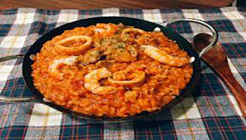

西式料理
【海鮮巧達濃湯】
 |
秋天這種乍暖還寒的天氣真的很適合喝海鮮巧達濃湯！濃郁、溫暖、又順口～ 由於海鮮種類太多種，購買及處理起來麻煩，可以買這種“海鮮總匯”，真的方便許多！～
【香煎肋眼牛排】
香煎肋眼牛排，外皮微微焦脆，充分展現油脂的香氣，中心卻保有柔軟的口感及豐富的肉汁，吃過的人都說讚！在家也能享受老饕級的美味！
【鮮蝦番茄藜麥燉飯】
|  |
來吃吃不一樣的燉飯吧！鮮蝦番茄藜麥燉飯，不僅美味還很健康呢！！
拉麵
【豚骨拉麵】
將豬骨長時間熬製而成的湯底，萃取出骨頭內的精華，使其擁有獨特且濃厚的香氣，依照火候的大小不同，創造出多種不同類型的白色湯頭，為台灣人最喜歡也最常見的拉麵，可以在每口湯之中感受到濃醇的風味。
【醬油拉麵】
經典的拉麵口味，以醬油為主要醬料搭配各式各樣的湯底，大多數台灣人認為醬油拉麵如其名一定非常鹹，但其實不然，透過醬油的鮮甜搭配湯底，更能帶出食材的風味，以致於大部分醬油拉麵的其實皆為淡麗系拉麵喔！
【鹽味拉麵】
鹽味其實並不是鹹味，鹽味拉麵被稱之為最古老的拉麵，以鹽做為調味搭配湯底，清澈的湯頭配上清爽的味道深受大眾喜愛，由於鹽的風味相較於其他調味料並不夠突出，一碗好吃的鹽味拉麵的高湯以及配料就顯得相當重要，也更能看出拉麵師傅的手藝。
【味噌拉麵】
北海道札幌為日本味噌拉麵起源地，相較於其他調味料，味噌的風味相當強烈，所以調配味噌和湯頭的比例成為每一碗味噌拉麵的共同難題，在台灣較不普及，但仍和醬油拉麵及豚骨拉麵並列為日本三大拉麵。